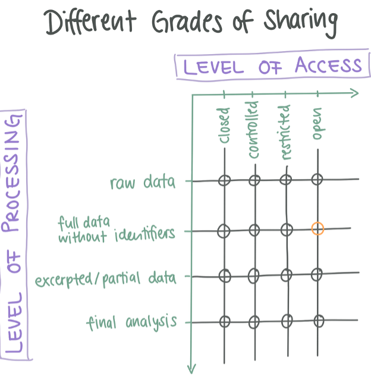
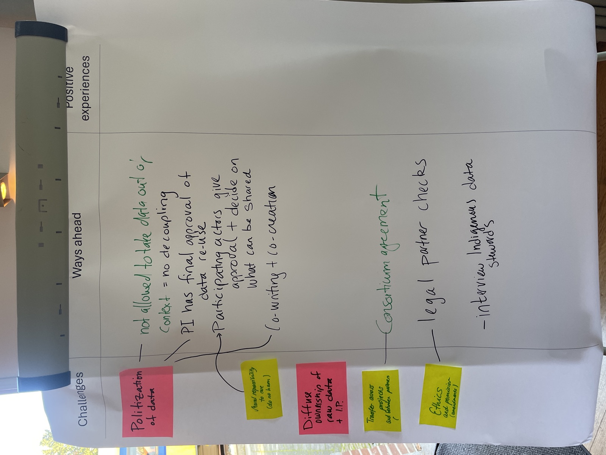

Data Repositories und Mehr
FAIRqual Workshop
Global Health Engineering, ETH Zürich
31. August 2026
Wo liegen eure Daten nach dem Projekt?
Ein Ordner auf dem Laborserver ist nicht das Ende des Weges.
Warum nicht einfach der Ordner auf dem Laborserver?
- Kein permanenter Link. Niemand kann diesen zitieren oder wiederfinden.
- Unsichtbar. Nur eure Gruppe weiss, dass der Ordner existiert.
- Fragil. Der Ordner geht verloren, wenn Server, Personal oder Websites wechseln.
Foto: FAIRqual-Team, ITD24-Workshop (Nov. 2024). Projektmaterial.
Was euch ein Repository gibt
- DOI – ein permanenter Identifikator, der dauerhaft funktioniert und zitiert werden kann.
- Sichtbarkeit – ein öffentlicher Katalog, durchsuchbar, auch wenn die Dateien geschlossen bleiben.
- Kontrollierter Zugang – Regeln, Antragsformulare, Verträge, ein Nachweis, wer die Daten erhalten hat.
- Langzeitarchivierung – Dateien bleiben lesbar und gesichert, über das Projekt hinaus.
DOI · Katalog · Zugangsregeln · Backup
Zwei Fragen entscheiden, wie ihr teilt

- Zugang – wie leicht kommt jemand an die Daten? (geschlossen -> offen)
- Verarbeitung – welche Arbeitsschritte teilt ihr? (Rohdaten -> Endauswertung)
Euer Datensatz ist ein Punkt auf diesem Raster. Der orange Kreis: vollständige Daten ohne Identifikatoren, offen geteilt.
Abbildung: FAIRqual-OER-Modul (Unit 4.3.1). Beispiel: Mohr et al. 2026. Nach Tabelle 2, Alexander et al. 2020.
Drei Arten von Repositories
- Institutionell – für Angehörige einer Institution. An der ETH: die ETH Research Collection.
- Disziplinär – fachspezifische Kuratierung und Zugang. Für qualitative und sozialwissenschaftliche Daten in der Schweiz: SWISSUbase (betrieben von FORS), und EnviDat der WSL für Umweltdaten
- Generalistisch – nimmt Daten aus allen Fächern an, z.B. Zenodo.
SWISSUbase ist das Zuhause für qualitative Daten: zertifiziert (CoreTrustSeal), vergibt DOIs, nimmt sensible Daten an, untersteht Schweizer Recht.
Ein Beispiel-Repository: EnviDat
- Betrieben von der WSL, der Eidgenössischen Forschungsanstalt für Wald, Schnee und Landschaft.
- Jetzt schon durchstöberbar: rund 766 Datensätze auf envidat.ch (Stand August 2026)
- Was ein Repository gibt, in Aktion: DOIs, offener Zugang, Creative-Commons-Lizenzen und Metadaten
- Einreichen bei der WSL: läuft über WSL-Zugehörigkeit oder Registrierung
- Mehr finden: re3data.org listet über 3’000 Forschungsrepositories, filterbar nach Land und Fachgebiet
Die Zugangs-Achse im Detail
Die Achse “geschlossen -> offen” aus dem Raster ist kein Schalter. Repositories geben euch Stufen dazwischen.
Konkret: SWISSUbase kann den Zugang auf akademische Forschung einschränken; die ETH Research Collection kann Dateien auf eingeloggte ETH-Angehörige beschränken.
Automatisch vs. manuell
Automatische Regeln
- Embargo-Datum, nur akademische Forschung.
- Niemand prüft die einzelne Anfrage.
Manuell (sur dossier)
- Eine benannte Person genehmigt jede Anfrage.
- Muss noch Jahre nach Projektende erreichbar sein.
Manuelle Genehmigung funktioniert nur, wenn die Rolle bei einer Funktion liegt (z.B. Data Steward). Sonst: automatische Regeln wählen.
Lizenz vs. Datennutzungsvereinbarung
Creative-Commons-Lizenz
- Regelt das Urheberrecht.
- Im Voraus erteilt, nicht widerrufbar.
- Deckt keine Personendaten ab.
- CC / CC0 für vollständig anonymisierte offene Daten.
Datennutzungsvereinbarung (DUA)
- Ein Vertrag mit jeder Nutzerin, jedem Nutzer.
- Beschränkt den Zweck, verbietet die Weitergabe.
- Verbietet Re-Identifikation, verlangt Löschung.
- Qualitative Daten brauchen meist genau das.
Keine von beiden darf offener sein, als was die Teilnehmenden eingewilligt haben.
Zugang geben, ohne die Daten zu geben
- Lesesaal-Zugang: genehmigte Besucherinnen und Besucher konsultieren das vollständige Material vor Ort, keine Kopien (z.B. Archiv für Zeitgeschichte der ETH).
- Den Prozess teilen, nicht die Daten: die Verarbeitungsstufe senken: Auszüge, Codebücher, Dokumentation der Entscheidungen.
Foto: Carol M. Highsmith, Public Domain (Library of Congress, via Wikimedia Commons).
{kind=link}
Jetzt seid ihr dran
Welche “Orte” passen zu welchen eurer Daten?
Auf eure Post-its: benennt einen Datensatz, platziert diesen auf dem Raster (wie offen, wie verarbeitet), und notiert, welches Repository oder Archiv dazu passt.

Foto: FAIRqual-Team, aus dem Paket dataitd24 (CC BY 4.0). https://doi.org/10.5281/zenodo.18493525
Danke
Kontakt
- Lars Schöbitz, Global Health Engineering, ETH Zürich
- Das FAIRqual-Projekt: fairqual.github.io/website
- Diese Folien: gebaut mit Quarto und reveal.js
Ressourcen
- Zertifiziertes Repository für qualitative Daten: SWISSUbase (FORS)
- ETH Research Collection: research-collection.ethz.ch
- Beispiel-Datensatz: dataitd24 auf Zenodo, kuratiert als eigenständige Website
Alle Materialien sind lizenziert unter Creative Commons Attribution 4.0 International (CC BY 4.0).
Referenzen
- FAIRqual OER module, Subsection 4.3 Practical Aspects of Sharing Qualitative Data (Units 4.3.1–4.3.3). In Vorbereitung.
- Alexander, S. M., Jones, K., Bennett, N. J. et al. (2020). Qualitative data sharing and synthesis for sustainability science. Nat Sustain 3, 81–88. https://doi.org/10.1038/s41893-019-0434-8
- ETH Zürich (2022). Guidelines for Research Data Management at ETH Zurich (RSETHZ 414.2). Rechtssammlung der ETH Zürich.
Zusatz: Was bedeutet CoreTrustSeal?
- Ein internationales Zertifikat für vertrauenswürdige Daten-Repositories – community-getragen, nicht kommerziell (coretrustseal.org)
- 16 Anforderungen, unter anderem: klarer Auftrag und gesicherte Finanzierung, Rechte und Lizenzen, Datenintegrität und Authentizität, Langzeitarchivierung, Sicherheit, Fachpersonal
- Peer-Review-Verfahren: das Repository dokumentiert die Erfüllung, unabhängige Gutachterinnen und Gutachter prüfen; das Zertifikat gilt 3 Jahre, dann Re-Zertifizierung
- Entstanden 2017 aus dem Data Seal of Approval und der Zertifizierung des ICSU World Data System
- Für euch heisst das: ein zertifiziertes Repository hat nachgewiesen, dass eure Daten auch nach Projektende verwaltet, gesichert und zugänglich bleiben, unabhängig von einzelnen Personen
SWISSUbase trägt das CoreTrustSeal: einer der Gründe, warum es die Empfehlung für qualitative Daten ist.
FAIRqual Workshop